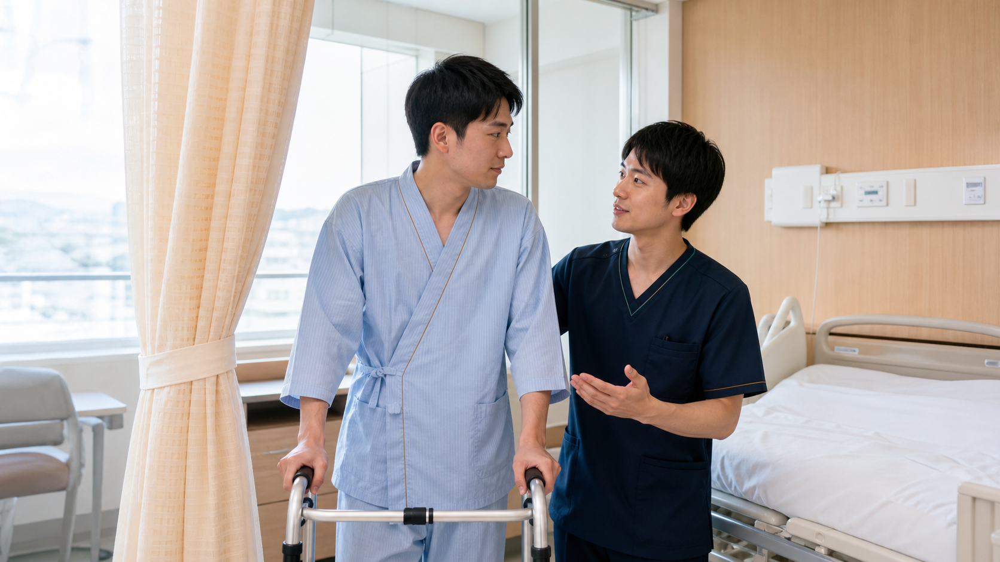

看護師の職場は、今も女性が大多数です。男性看護師として働いていると、同性だから患者さんの安心につながる場面がある一方、異性によるケアを望まない患者さんから介助を断られることもあります。女性が多いチームで、自分だけが少数派だと感じる日もあるでしょう。
こうした経験から「男性看護師は働きにくい」「選べる仕事が少ない」と感じることはあります。しかし、性別だけで看護師としての価値や将来が決まるわけではありません。
この記事では、運営者自身が病院、介護施設、訪問診療、訪問看護、クリニックで働いた経験と、ツアーナースへ応募した経験をもとに、男性看護師が直面しやすい悩みとキャリアの考え方を整理します。個人の体験は男性看護師全員に当てはまるものではありませんが、今後の働き方を考える材料としてお読みください。
男性看護師には、患者さんの羞恥心や職場の男女比によって役割が生まれたり、反対にケアや仕事の選択肢が限られたりする場面があります。大切なのは「男性に向く仕事」を探すことではなく、自分の得意なこと、望む働き方、生活設計に合う場所を選ぶことです。
男性看護師はどのくらいいる？
厚生労働省の最新の「令和6年衛生行政報告例」によると、2024年末時点で就業している看護師は136万3,142人です。このうち男性は11万8,068人で、看護師全体の8.7％でした。およそ11〜12人に1人という割合です。
| 年 | 男性看護師数 | 男性の割合 |
|---|---|---|
| 2014年 | 73,968人 | 6.8％ |
| 2018年 | 95,155人 | 7.8％ |
| 2022年 | 112,164人 | 8.6％ |
| 2024年 | 118,068人 | 8.7％ |
出典：厚生労働省「令和6年衛生行政報告例（就業医療関係者）の概況」。人数は免許保有者数ではなく、各年末時点の就業看護師の実人員です。准看護師は含みません。
男性看護師の人数と割合は長期的に増えています。それでも9割以上は女性であり、部署によっては男性が一人だけ、あるいは一人もいないことがあります。「看護師全体では男性が増えている」という統計と、「今いる職場では少数派」という実感は両立します。
男性看護師として働いてよかったと感じたこと
男性看護師であることが、患者さんの安心につながる場面があります。運営者自身の話をすると、男性患者、とくに10〜30代の比較的若い患者さんが入院しているときに担当になることがありました。
具体的には、整形外科の術後に必要となるトイレ介助や入浴介助です。患者さんにとって排泄や入浴は、とてもプライベートなケアです。同性の看護師だから緊張がやわらぎ、希望を伝えやすくなることがあります。

これは「男性看護師にしかできないケア」という意味ではありません。また、すべての男性患者が同性による介助を望むわけでもありません。それでも、患者さんの羞恥心へ配慮できる選択肢がチームにあることは、男性看護師として働く意義の一つだと感じました。
男性だから感じる働きにくさ
男性看護師の働きにくさは、女性が多いこと自体よりも、少数派であることを前提にしていない職場環境から生まれることがあります。同性の先輩や相談相手が少ない、何気ない会話へ入りにくい、更衣室や休憩場所が十分でない、といった状況です。
周囲の会話が自分のことではないかと気になったり、一人だけ距離があるように感じたりする日もあるかもしれません。ただし、実際に陰口を言われているとは限りません。少数派としての孤立感と、個別のハラスメントは分けて考える必要があります。
また、「男性だから移乗をお願い」「興奮している患者さんの対応は男性へ」と役割が偏ることもあります。身体介助や安全確保は体格だけで判断せず、患者さんの状態、技術、人数、福祉用具を含めてチームで考える仕事です。性別を理由に負担が集中しているなら、業務分担を相談してよい問題です。
性別に関するからかい、恋愛や私生活への過度な質問、不合理な役割の固定が続く場合は、日時と状況を記録し、上司や院内相談窓口へ相談しましょう。職場内で解決しにくい場合は、都道府県労働局の雇用環境・均等部（室）などにも相談できます。
患者さんからケアを断られることもある
運営者自身も、男性であることを理由に排泄介助や入浴介助を断られた経験があります。個人の経験の範囲では、とくに20〜50代の女性患者から断られることが多くありました。
断られると、看護師として認められていないように感じるかもしれません。しかし、多くの場合は看護技術や人格への評価ではなく、患者さんの羞恥心や安心に関する希望です。年齢、文化、宗教、これまでの経験によっても、受け入れられるケアは異なります。
- ケアの必要性と方法を落ち着いて説明する
- 患者さんが何に不安を感じているか確認する
- 可能であれば希望する性別のスタッフへ交代する
- 安全上すぐに対応が必要な場合は、応援を呼び代替案を相談する
- 対応内容と患者さんの希望をチームで共有する
患者さんの希望を尊重することと、男性看護師が傷つきを一人で抱えないことは、どちらも大切です。交代を当然として押しつけるのではなく、チーム全体で調整できる職場であることが望まれます。
男性看護師には選びにくい仕事もある
看護師の募集は、原則として性別にかかわらず均等な機会が与えられなければなりません。男女雇用機会均等法第5条は、募集・採用で性別による差別的な取り扱いを禁止しています。
一方、求人票に「女性のみ」「男性不可」と書かれていなくても、実際の選考や配置で性別が影響したと感じることがあります。運営者がツアーナースへ応募した経験では、結果として女性看護師が選ばれるケースが少なくありませんでした。
修学旅行への同行
中学校・高校の修学旅行では、思春期の生徒の体調不良だけでなく、宿泊先での着替えや入浴、女子生徒からの相談なども想定されます。そのため、参加者の羞恥心や保護者の安心を考慮し、主催者や派遣元が女性看護師を優先するケースも見られます。
イベント救護
夏祭りや音楽フェスなどのイベント救護でも、運営者自身、羞恥心への配慮を理由に男性看護師が選ばれにくいケースを経験しました。ただし、イベント救護全体で男性が働けないわけではありません。業務内容、救護体制、参加者層によって条件は異なります。
男女を募集対象としているように見せながら、実際には一方の性だけを採用対象にすることも、均等法に抵触する可能性があります。一方で、個別の選考結果だけから違法と断定することもできません。疑問がある場合は、応募先へ業務上必要な条件を確認するか、都道府県労働局へ相談してください。
職場が変わると、男性看護師としての働き方も変わる
運営者は、病院だけでなく、介護施設、訪問診療、訪問看護、クリニックでも勤務してきました。複数の職場を経験すると、男性であることが意識される場面や、チーム内での役割は職場によって異なると分かります。
患者層とケアの内容
若い男性患者の排泄介助や入浴介助では、男性看護師がいることが安心につながる場合があります。一方、女性患者へのプライベートなケアでは、異性であることを理由に交代を希望されることもあります。職場名だけでなく、どのような患者さんが多く、どのようなケアを担当するのかが重要です。
一人で訪問するか、チームで対応できるか
病院や介護施設では、患者さんが異性によるケアを望まないとき、別のスタッフへ相談できることがあります。訪問看護のように利用者宅で一対一になる仕事では、その場で簡単に担当を交代できません。男性看護師の訪問について、利用者や家族へ事前に説明し、希望を確認できる体制が働きやすさにつながります。
男性スタッフの人数と職場の文化
男性看護師が一人だけの職場では、同性の相談相手が少なく、更衣室などの設備が十分でない可能性があります。反対に、男女を問わず意見を伝えやすく、力仕事や対応困難な患者さんを性別だけで割り振らない職場なら、男性が少なくても働きやすいでしょう。
「病院だから働きやすい」「訪問看護だから男性に向いている」とは一概にいえません。見学や面接では、患者層、ケアの内容、訪問時の担当調整、男性用設備、業務分担について具体的に確認することが大切です。
男性看護師のキャリアにはどんな選択肢がある？
救急、ICU、精神科を「男性向き」と紹介する記事がありますが、性別だけで適性は決まりません。必要なのは、それぞれの仕事で求められる能力と勤務条件を知り、自分の強みや暮らしと照らし合わせることです。
- 救急・ICU：変化を素早く捉える観察力、優先順位づけ、急変対応を学びたい人
- 精神科：対話と距離の取り方を大切にし、長期的な回復を支えたい人
- 訪問看護：生活の場で利用者と家族に向き合い、自律的に判断したい人
- 介護施設：暮らしを継続して支え、多職種と協働したい人
- クリニック：特定の診療科を学びながら、外来中心の働き方を望む人
- 企業・教育・医療関連職：臨床経験を、健康管理、教育、医療機器、ITなどに生かしたい人
- 管理職・独立：人材育成や組織運営、訪問看護ステーションなどの事業運営に関心がある人
未経験の領域は、イメージだけで決めず、見学や求人票、現場で働く人の話から仕事内容を確認しましょう。看護師資格で選べる場所は、病棟だけではありません。
男性看護師が自分らしいキャリアを考える方法
働きにくさを感じたとき、「男性だから看護師に向いていない」と結論づける必要はありません。今の職場との相性と、看護師という仕事への適性は別の問題です。
- つらさを分ける：患者対応、職場文化、業務内容、勤務時間、収入のどこに負担があるか
- 譲れない条件を決める：夜勤、休日、収入、通勤、家庭との両立などを整理する
- 得意な関わり方を知る：急性期の判断、長期的な支援、教育、調整、マネジメントなどから考える
- 小さく確かめる：見学、異動、研修、短期の応援勤務などで、次の職場を具体的に知る
- 複数の道を持つ：専門性、転職、管理職、病院外、独立を一つに絞りすぎない
キャリアは一度で完成させるものではありません。年齢、体力、家庭、興味の変化に合わせて、何度でも描き直せます。
まとめ：働きにくさはあっても、性別だけで将来は決まらない
男性看護師は2024年末時点で看護師全体の8.7％です。人数は増えているものの、現場では少数派であり、患者さんの羞恥心、職場の設備や人間関係、仕事の選考で難しさを感じることがあります。
一方、同性の看護師として男性患者の安心につながる場面もあります。患者さんからケアを断られた経験も、男性患者へ配慮できた経験も、どちらか一方だけが男性看護師の現実ではありません。
「男性看護師に向く職場」ではなく、「自分が大切にしたい働き方に合う職場」を探すこと。病院、介護施設、在宅、クリニック、企業、管理職、独立まで視野を広げれば、キャリアの選択肢は一つではありません。
次の記事では、性別を問わず、看護師が現在地と将来像を整理するための「看護師のキャリアマップ」を具体的に紹介する予定です。
参考資料・出典
- 厚生労働省：令和6年衛生行政報告例（就業医療関係者）の概況
- 厚生労働省：就業保健師・助産師・看護師・准看護師（結果の概要）
- 厚生労働省：採用・選考時のルール
- 厚生労働省：均等法Q&A
- 厚生労働省：男女雇用機会均等法
本記事は2026年8月25日時点の情報と運営者個人の経験をもとに作成しています。患者、施設、募集元が特定されないよう一部を一般化しています。体験談は男性看護師全体や業界全体の傾向を示すものではありません。掲載写真はすべて生成イメージであり、実在する人物、医療機関、施設を表すものではありません。